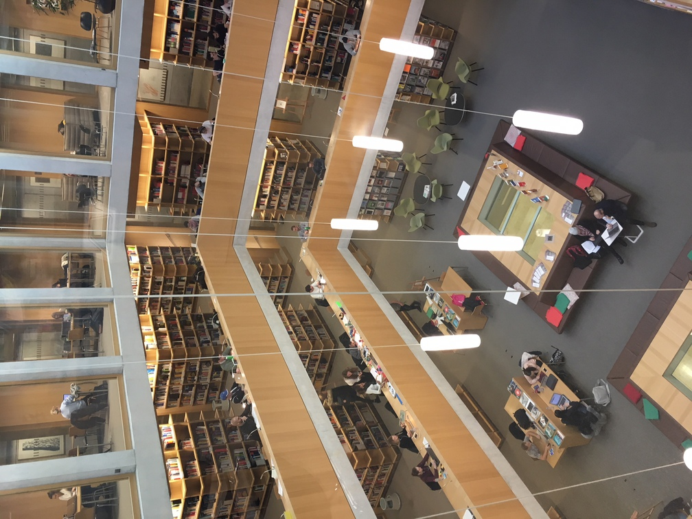

Die meiste Zeit verbringen wir in unserem Bibliotheksbüro. Dieses Bild zeigt unsere Lernende Sara, wie sie kurz vor Weihnachten die eintreffende Flut neuer Büchern bewältigt.

Nicht missen möchten wir die fantasie- und liebevollen Dekorationen unserer Mitarbeiterin Stefanie im Schalterbereich unserer Bibliothek.

Wenn wir etwas verbessern könnten in unserer schönen Bibliothek, dann wäre das eine Abtrennung zwischen dem Lese- und dem Schalterbereich.

Wenn die Bibliotheksnutzerinnen und -nutzer in unserer Bibliothek an den Schalter kommen, um Medien zurückzubringen, lehnen sie sich wohl etwas innig am Schalter aus Eichenholz an, denn es entstehen gut sichtbare Löcher. Diese erzählen eine kleine Geschichte. Die Geschichte von einem viel genutzten Schalter mit Tuchfühlung unserer Besucher und Besucherinnen. … da hat es auch nichts genützt, dass wir die Löcher auffüllen liessen… sie entstehen immer wieder, wie aus Zauberhand, neu.

Während der Lernphase richten wir für (studier-)müde Benutzerinnen und Benutzer auf unseren Sitzbänken eine Powernap-Zone ein. Dieser wird gerne und rege genutzt.
Bibliothek der FHS St.Gallen, Hochschule für Angewandte Wissenschaften, Rosenbergstrasse 59, 9001 St.Gallen
Lisa Oberholzer, Co-Leiterin Bibliothek